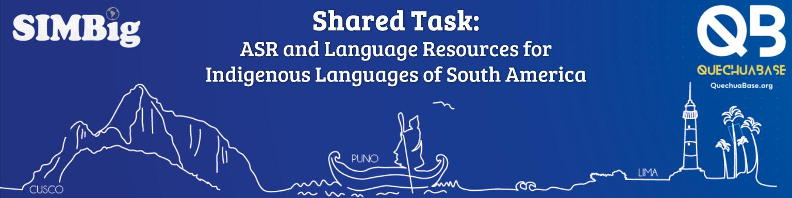
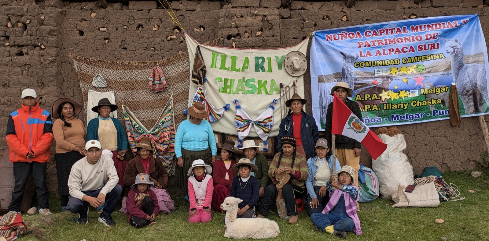

SIMBig 2026 · Arequipa, Peru · 28–30 October 2026
Shared Task Results
Automatic Speech Recognition (ASR) and Language Resources for Indigenous Languages of South America

Photo: Elwin Huaman- Registration opens
- Datasets released
- Registration closes
- Task 1 test set
- Abstracts due
- Results, papers & videos due
- Results announced Now
Organised and supported by
Overview
The SIMBig 2026 Shared Task promoted open and reproducible speech technology for Indigenous languages of South America, starting with Puno Quechua. It had three tasks: an ASR benchmark on Puno Quechua (Task 1), ASR for any South American Indigenous language without an existing system (Task 2), and educational or literacy resources (Task 3). Each submission comprised a system description paper, reviewed by at least two independent reviewers, and a 15-minute video presentation.
35registered teams
14countries
2papers accepted
Registrations by task: Task 1 · 28 teams, Task 2 · 15 teams, Task 3 · 17 teams (teams could register for more than one task). Teams came from Bolivia, Brazil, Canada, Colombia, Germany, India, Iran, Italy, Mexico, Nigeria, Peru, Switzerland, Tunisia and the United States.
Key findings
- Best Task 1 system: Chana-L (team Chana-NLP) reached 11.93% WER and 2.57% CER, against 18.81% WER for the strongest organiser baseline on the same test set (omniLLM7B_v2). Seven systems from five teams beat that baseline.
- Spontaneous speech is harder: all twelve participant systems had a higher WER on spontaneous than on scripted speech, by 2.0–15.8 points.
- Speaker gender gap: eleven of twelve systems had a higher WER for female speakers (by up to 5.6 points), a gap that warrants further analysis of speaker balance in the data.
- Error profile: substitutions account for about 80–84% of word errors for every system, while deletion and insertion rates each stay below 4.4%.
Task 1: Puno Quechua ASR Baseline
Participants built ASR systems for Puno Quechua using the Mozilla Common Voice Puno Quechua datasets, which contain scripted and spontaneous speech. Systems were evaluated on a held-out test set of 659 clips (59 minutes, 7 speakers). The primary metric is word error rate (WER); character error rate (CER) and chrF are also reported.
Click a column header to sort. Lower is better for all error rates and Levenshtein; higher is better for chrF. S / D / I = word-level substitution / deletion / insertion rates.
| Rank | Team | WER (%) | CER (%) | CER no diacritics (%) | CER no space (%) | chrF | Levenshtein / utt | S (%) | D (%) | I (%) | WER female (%) | WER male (%) | WER scripted (%) | WER spontaneous (%) | Evaluated at |
|---|---|---|---|---|---|---|---|---|---|---|---|---|---|---|---|
| 1st place | Chana-L | 11.93 | 2.57 | 2.56 | 2.53 | 94.87 | 1.31 | 9.53 | 1.37 | 1.03 | 12.29 | 10.79 | 10.08 | 13.14 | 2026-10-18 16:14 UTC |
| 1st place | Chana-M | 12.11 | 2.64 | 2.63 | 2.61 | 94.74 | 1.35 | 9.74 | 1.34 | 1.03 | 12.84 | 9.83 | 9.89 | 13.57 | 2026-10-18 16:14 UTC |
| 2nd place | Espiral | 13.37 | 2.80 | 2.79 | 2.77 | 94.28 | 1.43 | 10.98 | 1.19 | 1.21 | 13.55 | 12.82 | 10.87 | 15.02 | 2026-10-20 08:42 UTC |
| 1st place | Chana-S | 13.73 | 2.94 | 2.93 | 2.91 | 94.08 | 1.50 | 11.29 | 1.26 | 1.19 | 14.47 | 11.43 | 10.80 | 15.66 | 2026-10-18 16:14 UTC |
| 3rd place | Uyariq | 14.87 | 3.08 | 3.07 | 3.03 | 93.77 | 1.57 | 12.01 | 1.47 | 1.39 | 15.45 | 13.03 | 11.71 | 16.94 | 2026-10-20 08:43 UTC |
| 4 | 🐣_en_🏡 | 16.10 | 3.37 | 3.36 | 3.31 | 93.12 | 1.72 | 13.14 | 1.52 | 1.44 | 17.05 | 13.14 | 14.90 | 16.89 | 2026-10-20 08:42 UTC |
| 5 | Innova | 17.16 | 3.47 | 3.47 | 3.44 | 92.75 | 1.77 | 14.30 | 1.80 | 1.06 | 17.86 | 14.96 | 14.83 | 18.69 | 2026-10-18 15:28 UTC |
| — | omniLLM7B_v2 Baseline | 18.81 | 3.50 | 3.45 | 3.46 | 92.20 | 1.78 | 16.21 | 1.57 | 1.03 | 17.52 | 22.86 | 20.56 | 17.66 | 2026-10-27 10:23 UTC |
| 6 | CSILAB | 19.71 | 3.81 | 3.80 | 3.72 | 91.94 | 1.95 | 16.05 | 2.50 | 1.16 | 20.85 | 16.13 | 14.64 | 23.04 | 2026-10-20 08:41 UTC |
| 7 | QASR | 23.78 | 5.06 | 5.04 | 4.97 | 89.67 | 2.58 | 19.48 | 2.89 | 1.42 | 25.13 | 19.55 | 17.37 | 27.99 | 2026-10-18 15:29 UTC |
| 8 | USP | 25.79 | 4.72 | 4.70 | 4.64 | 89.61 | 2.41 | 21.59 | 3.48 | 0.72 | 26.38 | 23.93 | 23.03 | 27.60 | 2026-10-18 15:30 UTC |
| — | xlsr-cpt-silver Baseline | 27.42 | 5.42 | 5.39 | 5.30 | 88.64 | 2.77 | 22.55 | 3.07 | 1.80 | 28.05 | 25.43 | 21.15 | 31.53 | 2026-10-20 10:33 UTC |
| — | xlsr-cpt-validated Baseline | 30.53 | 6.27 | 6.24 | 6.23 | 86.70 | 3.20 | 25.66 | 3.35 | 1.52 | 31.65 | 27.03 | 22.12 | 36.05 | 2026-10-26 09:11 UTC |
| 9 | Cristian_Ahumada | 36.33 | 7.54 | 7.50 | 7.40 | 84.39 | 3.85 | 30.22 | 4.07 | 2.04 | 36.98 | 34.29 | 26.81 | 42.58 | 2026-10-20 08:41 UTC |
| 10 | UCSP | 39.96 | 9.72 | 9.68 | 9.05 | 83.70 | 4.96 | 31.92 | 4.38 | 3.66 | 39.73 | 40.71 | 36.63 | 42.15 | 2026-10-18 15:29 UTC |
Final leaderboard, last updated 27 October 2026, 10:24 UTC. Teams are ranked by the WER of their best model; all models from the same team share that team's rank (Chana-L, Chana-M and Chana-S are three models from team Chana-NLP). Rows marked Baseline are the organisers' own models, evaluated on the same test set for reference and not ranked; they differ from the initial baselines released at the start of the task (see Data & baselines).
Winner
Honourable mentions
In alphabetical order.
Team: Espiral
Team: Uyariq
Task 2: ASR for Any Indigenous Language of South America
Teams were invited to build the first ASR system for a South American Indigenous language that had none, and to release their train, dev and test splits, with a test set of at least 30 minutes.
Outcome: postponed
Due to a lack of entries for Task 2 (only one proposal), the competition for this task has been postponed. This outcome underscores a strategic gap and opportunity: we need to focus on bringing NLP resources to these communities, building capacity, lowering barriers to participation, and ensuring future events are more representative.
Task 3: Educational/Literacy Resource based on Language Datasets
Teams created resources such as websites, tutorials, notebooks, visualisations, videos or learning platforms that help people learn or explore an Indigenous language, or reuse its datasets. Submissions were judged on usefulness to learners and communities, openness and reusability, technical quality, and clarity of presentation.
Wasi-y-kuna-pi: Hearing Every Suffix in a Talking Morphology Reader for Puno Quechua
Awards
| Task | Award | Team | Prize |
|---|---|---|---|
| Task 1: Puno Quechua ASR Baseline | Winner | Chana-NLP (PUCP, University of Edinburgh) | USD 100 + SIMBig 2026 registration |
| Task 1: Puno Quechua ASR Baseline | Honourable mention | Espiral | — |
| Task 1: Puno Quechua ASR Baseline | Honourable mention | Uyariq (FAU Erlangen-Nürnberg) | — |
| Task 2: ASR for Any Indigenous Language of South America | Postponed | — | — |
| Task 3: Educational/Literacy Resource based on Language Datasets | Winner | CSILAB (CSI Lab) | USD 50 + SIMBig 2026 registration |
Papers from the winning teams will appear, after revision in response to reviewer feedback, in the Springer Communications in Computer and Information Science (CCIS) series.
How to cite
If you use the data, baselines or results, please cite the following papers:
@inproceedings{simbig2026sharedtask,
title = {Findings of the SIMBig 2026 Shared Task on Automatic Speech Recognition
and Language Resources for Indigenous Languages of South America},
author = {Huaman, Elwin and Cordova, Johanna},
booktitle = {Information Management and Big Data (SIMBig 2026)},
series = {Communications in Computer and Information Science},
publisher = {Springer},
year = {2026},
note = {TODO: volume, pages, DOI}
}
@inproceedings{HuamanGCK2026,
title = {Building Community-Centred {NLP} Resources for {P}uno {Q}uechua},
author = {Huaman, Elwin and Gamarra Lafuente, Adrian and Cordova, Johanna and Korhonen, Anna},
booktitle = {Proceedings of the Sixth Workshop on {NLP} for Indigenous Languages of the {A}mericas ({A}mericas{NLP})},
month = {jul},
year = {2026},
address = {San Diego, California, USA},
publisher = {Association for Computational Linguistics},
url = {https://aclanthology.org/2026.americasnlp-6.13/},
doi = {10.18653/v1/2026.americasnlp-6.13},
pages = {147--152},
isbn = {979-8-89176-415-6}
}
@inproceedings{HuamanHHQ2026,
author = {Elwin Huaman and Jorge Luis Huaman and Wendi Huaman and Ninfa Quispe},
title = {Quechua Speech Datasets in Common Voice: The Case of Puno Quechua},
booktitle = {Proceedings of the Information Management and Big Data (SIMBig 2025), Lima, Peru, October 29-31, 2025},
year = {2026},
publisher = {Springer Nature Switzerland},
pages = {184--193},
isbn = {978-3-032-20322-9},
series = {Communications in Computer and Information Science}
}
@unpublished{CordovaWZCMH26,
author = {Johanna Cordova and Ilaine Wang and Jocelyn Zaruma and Oumaya Chelbi and Alexis Malderez and Elwin Huaman},
title = {{Creating Small ASR Models For Low-resource Languages From Similar Languages: The Cases Of Betawi and Puno Quechua}},
note = {Preprint, HAL Id: hal-05624964},
year = {2026},
month = may,
url = {https://hal.science/hal-05624964}
}Acknowledgements
We thank all participating teams, and the reviewers and Programme Committee for their careful evaluation. We are grateful to the Puno Quechua speakers and communities who contributed recordings, and to Mozilla Common Voice for hosting the datasets. The shared task was organised and supported by SIMBig, the Centre for Human-Inspired AI (CHIA) and the Cambridge Centre for Data-Driven Discovery (C2D3) at the University of Cambridge, ERTIM at Inalco, and QuechuaBase.
Organisers
Programme Chairs: Elwin Huaman (University of Cambridge, UK), Johanna Cordova (ERTIM, Inalco, France),
Juan Antonio Lossio-Ventura (National Institutes of Health, USA), Hugo Alatrista-Salas (De Vinci Research Centre, France).
Advisory Committee: Anna Korhonen (University of Cambridge, UK), Damien Nouvel (ERTIM, Inalco, France).